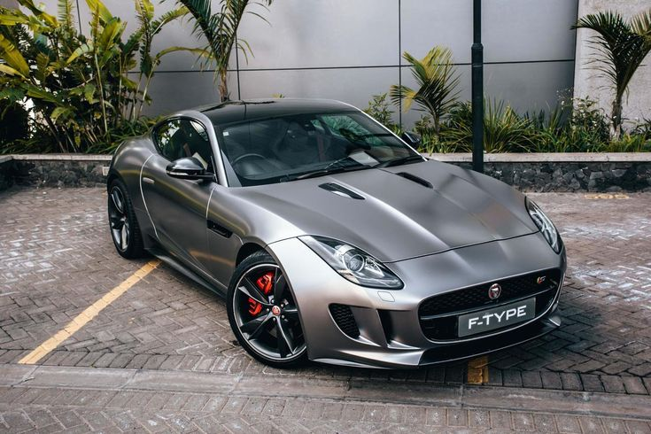

The United Kingdom has played an important role in the development of the global automative industry. British car manufactures are known for producing vehicles that combine luxury, style, and powewrful perfomance.
History of British cars
The British automative industry has a long tradition of producing luxury vehicles elegant sports cars, and high-performance racing machines Since the early 20th century, British manufactures have built vehicles known for craftsmanship, innovation, and prestige.
Today the United Kingdom remains one of the most influential countries in the automative design and engineering
Notable British Car Brands
- Rolls Royce
- Bentley
- Aston Martin
- McLaren
- Jaguar

Rolls Royce
Rolls Royce is one of the most prestigious luxury car manufactures in the world. Known for hand crafted interiors and exceptional comfort, every Rolls Royce vehicle is designed with attention to detail and ultimate refinement
What Rolls Royce is known for
- Handcrafted luxury interiors
- Ultra smooth driving experience
- prestigious status symbol
Popular BMW Models
- Phantom
- Ghost
- Cullian

Bentley
Bentley combines luxury with powerful perfomance. The brand is famous for producinng elegant grand touring cars that deliver both speed and comfort.
What Bentley is known for
- Luxury grand touring vehicles
- High performance engines
- Premium craftsmanship
Popular BMW Models
- Continental Gt
- Flying Spur
- Bentayga

Aston Martin
Aston Martin is famous for building stylish luxury sports Cars The brand became globally recognised through its connection with the James Bond Movies
What Aston Martin is known for
- Elegant sports design
- High perfomace
- James Bond associations
Popular BMW Models
- DB11
- Vantage
- DBS Superleggera

Mclaren
McLaren is high performance supercar manufacture that origanated from Formula 1 racing. The company focuses on lightweight design, advanced technology, and extreme speed.
What Mclaren is known for
- Formula 1 racing heritage
- Carbon fiber engineering
- High perfomance supercars
Popular BMW Models
- 720S
- Artura
- P1

Jaguar
Jaguar is a famous British luxury car manufacturer known for its stylish design, powerful engines, and high-performance vehicles. Jaguar vehicles are known for combining elegance with performance. The brand produces luxury sedans, sports cars, and modern electric vehicles that focus on innovation and advanced technology.
What Jaguar is know for
- Luxury and stylish design
- High-performance sports cars
- Advanced automotive technology
Popular Models
- Jaguar F-Type
- Jaguar XF
- Jaguar I-PACE